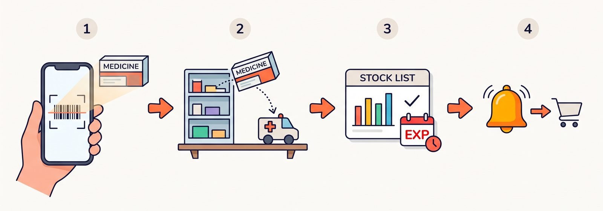

クリニックの医薬品在庫管理
医薬品在庫管理とは、扱う薬の入荷から保管、払い出しまでの流れを記録し、置き場所ごとの残量と期限を見えるようにする業務です。
おひさま会の垂水と舞子では、スマホやPCでバーコード（JAN）を読むだけで、納品・払出・在庫一覧まで扱っています。残量が減ったら、医薬品発注を促す知らせが届きます。

納品から発注の知らせまでの流れ（イメージ図）導入前の課題
- 納品と払出の記録が紙頼みで、手作業の負担が大きい
- 薬品庫と車載など、置き場所ごとの残量が見えない
- 払出の履歴が残らず、記録の確認や修正が難しい
- よく使う薬の減りに気づくのが遅れ、発注のタイミングを逃す
できること
- 納品（入庫） — 医薬品のパッケージに表示されているバーコードを読み取り、在庫数や使用期限を記録する
- 払出（出庫） — 払出を行う医薬品のバーコードを読み取り、払出先を記録する
- 在庫一覧 — リアルタイムな在庫数を確認する
- ログ管理 — 納品日時や使用期限、いつ・どこへ払い出したかの履歴を確認できる
- 医薬品発注の知らせ — 在庫が減った薬について、発注を促すメッセージが届く
医薬品発注との違い
ここで言う医薬品発注は、在庫が減ったことに気づくための知らせです。患者ごとの周期で高額薬を知らせる薬剤発注ナビとは、役割が違います。
薬剤マスターの考え方
医薬品在庫管理でいちばん詰まりやすいのが、「薬の名前を、誰が・どう登録するか」です。全品を事前に手入力するのも、巨大な一覧を毎回探すのも、現場には合いません。
この仕組みは、2段に分けています。
日常は「いま扱っている薬」だけを見る取扱マスタ。件数は実使用分だけ。検索が速い
▼ 取扱に無いバーコードを読んだとき
約6万件の医薬品マスタで、名前だけ引くJAN と、販売包装のコードのどちらでも探す
▼
名前が分かったら、取扱へ自動で足す次からは手登録なしで読める
▼
入数（箱に何個入るか）は、大きなマスタを信じない初回の納品で、現場が入れた数を覚える
名前は大きなマスタから。入数は現場の実物から。全品を先に手作業で打ち込む必要がなく、箱の入数もカタログ値とのズレが起きません。
処理フロー
クリニックを選んで起動垂水 / 舞子。作業中も切替できる
▼
バーコードを読む取扱になければ、大きな医薬品マスタで名前を引いて追加
▼
納品なら在庫に足し、期限を残す ／ 払出なら払出先を残す
▼
在庫一覧とログで確認納品日時・期限、いつ・どこに払出したか
▼
在庫が減ったら、医薬品発注を促す知らせ
導入効果
入庫と払出が、同じ流れで残る。棚卸の数字合わせではなく、現場の出し入れそのものを記録します。
スマホでもPCでも使える。薬品庫でも、その場でバーコードを読めます。
医薬品発注のきっかけが届く。減った量が見えるので、「そろそろ発注」を見逃しにくくなります。
数えるためのアプリではない。納品・払出の記録をその場で残すためのものです。
関連ページ
この仕組みについて相談する
おひさま会が自院で内製し、運用している実例をもとに、考え方や進め方をお伝えします。まずは手順書を読むだけでも構いません。
導入を相談する手順書を読む